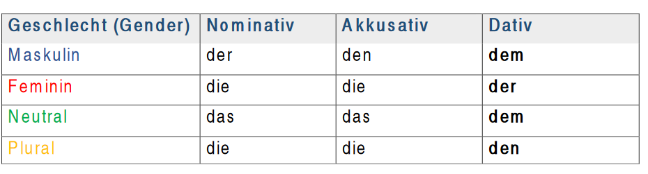

The dative case – Der Dativ
Der Dativ einer der 4 deutschen Fälle.
German has four cases:
- - NOMINATIV which is the subject
- - AKKUSATIV which is the direct object
- - DATIV (Indirect object)
- - GENETIV which indicates possession
Beispiel: Ich gebe dem Kind ein Geschenk
Der Dativ = das indirekte Objekt des Satzes
We use the dative case to show the indirect object of the verb that answers the question: to/ for whom action is taken. Indirect objects are the people, places and things in a phrase that receive the action. For instance, in the sentence “I give a present to the child”, “the child” is indirect object because “I” (the subject) acts upon “the present” (the direct object)
Definiter Artikel im Dativ (definite articles in the dative case)

Indefiniter Artikel im Dativ (indefinite articles in the dative case)
When to use Dative?
 Sentence with more than one object (direct object and indirect object)
ex: Der Mann gibt der Frau einen Brief
Sentence with more than one object (direct object and indirect object)
ex: Der Mann gibt der Frau einen Brief- After specific verbs (≈ 50 verbs)
ex: the verb helfen + Dativ
Der man hilft der Frau (The man helps the woman)
Sie hilft dem Kind (She helps the child)
Übung (exercise):
Lesen Sie die Sätze und ergänzen Sie die Artikel- Tabelle!
(Read the sentences and complete the article table!)
- Der Student gibt dem Lehrer den Brief.
- Die Frau kauft der Tochter die Blume.
- Das Kind schenkt dem Mädchen das Geschenk.
- Die Eltern lesen den Kindern die Geschichten vor.